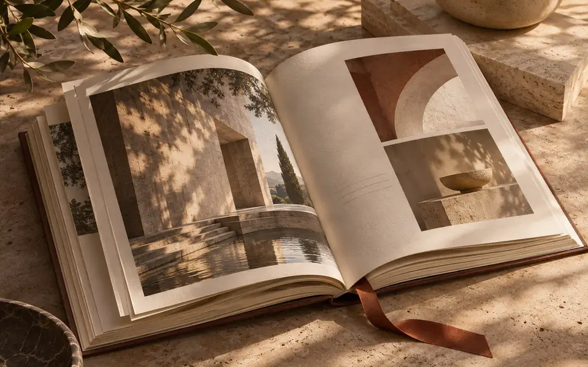

Kembali ke pilihan desain
Lazarus Dev
The Monograph
Susunan portofolio seperti buku editorial, dengan ruang untuk foto dan tulisan panjang.

Ilustrasi konsep desain, bukan screenshot website jadi.
Pilih The Monograph
Lihat desain lainnya